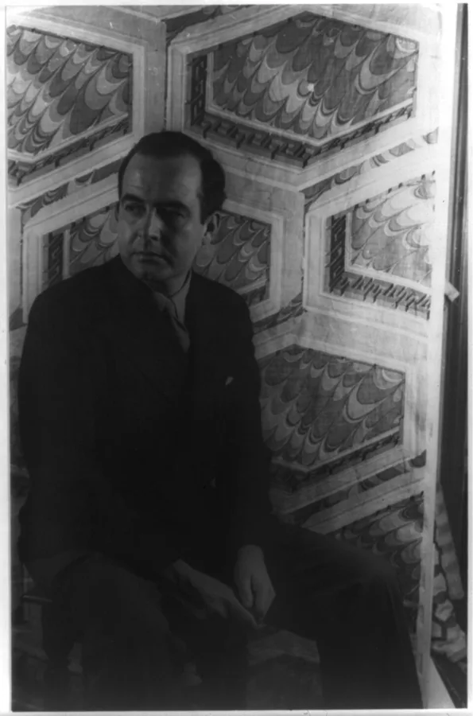

Music pioneer · Modern · Composer arrangement studio
Samuel Barber
Barber’s Adagio for Strings (1936) is still under copyright, so it cannot be reproduced here. This workspace holds an original classroom study instead, written to show the technique the Adagio is famous for: a slow melody moving by step over held notes that clash and then resolve. Press Play, then compare it with a recording of the Adagio. Playback uses sampled or synthesized instruments; consult the linked edition for fingering, bowing, pedaling, and expressive detail.
Arranging with care
A source staff is not always the melody: in an orchestral score, find the staff carrying the theme. A two-part piano study pairs your selected voice with a source bass; it is not a concert reduction and wide leaps may need redistribution. Saxophone notation is transposed while playback stays at concert pitch. Violin parts stay at concert pitch and are moved by octaves to sit above the open G string. Guitar tab preserves pitch and rhythm but may need a different octave or fingering. Original ensembles are available only where the source contains those parts. Piano reductions and original classroom studies retain their source identities.
Recordings: Nicholaus P. Brosowsky’s Tonejs-Instruments sample collection, CC BY 3.0; VSCO 2 Community Edition, CC0. Sample credits and processing.
Music pioneer · Modern · 1910–1981
About Samuel Barber

Samuel Barber (1910–1981) wrote some of the most expressive American music of the twentieth century. He stayed loyal to lyrical melody when many of his colleagues did not, and his Adagio for Strings became the music the United States turns to in moments of grief.
Life and context
Barber was born in West Chester, Pennsylvania, on 9 March 1910. His aunt was the opera singer Louise Homer. At nine he left a note for his mother saying he was meant to be a composer and asked her not to make him play football. At fourteen he entered the new Curtis Institute of Music in Philadelphia, where he studied composition, piano and singing, and met the Italian composer Gian Carlo Menotti, his lifelong partner.
In 1936, while living in Europe, he wrote a String Quartet. Its slow second movement, arranged for string orchestra as the Adagio for Strings, was premiered on 5 November 1938 by Arturo Toscanini and the NBC Symphony Orchestra in a national radio broadcast. It made him famous. The Adagio was broadcast after the deaths of Franklin D. Roosevelt and John F. Kennedy, and has been played at memorials ever since. Barber later arranged it for choir as Agnus Dei (1967).
His other works include Knoxville: Summer of 1915 (1947) for soprano and orchestra, concertos for violin and cello, and the opera Vanessa (1958), which won the Pulitzer Prize. His Piano Concerto won a second Pulitzer in 1963.
In 1966 his opera Antony and Cleopatra opened the new Metropolitan Opera house at Lincoln Center. A lavish production overwhelmed it, the critics were harsh, and Barber wrote little afterward. He died in New York on 23 January 1981.
Samuel Barber: a timeline
- Born in West Chester, Pennsylvania, on 9 March.
- Enters the Curtis Institute of Music at fourteen.
- Composes the String Quartet, Op. 11, with its slow movement.
- Toscanini premieres the Adagio for Strings on NBC radio.
- Composes Knoxville: Summer of 1915.
- Pulitzer Prize for the opera Vanessa.
- Second Pulitzer Prize, for the Piano Concerto.
- Antony and Cleopatra opens the new Metropolitan Opera house.
- Dies in New York on 23 January.
Long-line melody and suspension
The Adagio for Strings is built from a long melody that moves almost entirely by step, one note to the next, never jumping far. Because it has no sudden leaps, it feels like a single breath stretched out.
Barber keeps tension high with suspensions: one voice holds a note while the harmony changes beneath it, creating a clash (dissonance) that then resolves down by step. Chains of suspensions, climbing slowly higher, build to the famous climax and its sudden silence.
Music pioneer · Modern
Sound experiment: long-line melody and suspensions
Version A plays a stepwise melody note by note. Version B lets each note overlap the next, so they clash before resolving. Which sounds more intense?
This is an original classroom demonstration of a musical idea, not an excerpt or recording of the composer’s work.
Choose a version, then press Play.
Guided listening
Choose a performance of one of these works. Listen once for its overall character, then again for the detail in the prompt.
- Adagio for Strings: follow the opening melody and count how many notes move by step versus by leap.
- Listen for the climax, where the violins play very high and loud, and then for the silence that follows.
- Agnus Dei: compare Barber’s choral version of the same music. What changes when voices sing it?
Practice and reflection
- Play the classroom study and point to each suspension: where does a held note clash, and where does it resolve?
- Hum the opening of the Adagio from a recording. Does it ever leap? Describe the shape of its line.
- Why might composers be cautious about quoting copyrighted music in a public lesson? What are other ways to study it?
Check your listening
A suspension holds a note over a changing chord so it clashes, then resolves down a step. Chains of them, rising in pitch, are what build the intensity of the Adagio. A useful answer names a feature you can hear and explains its effect. More than one interpretation is possible.
Use the heart | save pill to keep these notes in this browser, or copy them before leaving.